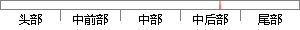

”) = ED076287532E86365E841E92BFC50D8C
片段位置图

相似结果|
相似片段 1：“ed076287532e86365e841e92bfc50d8c”。哈希变换是不可逆的，因此破解者即使攻破了服务器端，获取了用户密码数据，但这串密文无法换成密码明文，以此保护用户数据不被非法利用。5
相似片段 2：“ed076287532e86365e841e92bfc50d8c”。哈希变换是不可逆的，因此破解者即使攻破了服务器端，获取了用户密码数据，但这串密文无法换成密码明文，以此保护用户数据不被非法利用。5 结束语密码保护不能光靠
相似片段 3：·256· 2017 年 4 月的数据里则显示为“ed076287532e86365e841e92bfc50d8c”。哈希变换是不可逆的，因此破解者即使攻破了服务器端，获取了用户密码数据，但这串密文无法
相似片段 4：水网（下转第256页）万方数据| 发展与创新 | Development and Innovation·256· 2017 年 4 月的数据里则显示为“ed076287532e86365e841e92bfc50d8c”。
|
※ 片段修改建议 ※
近似词参考：